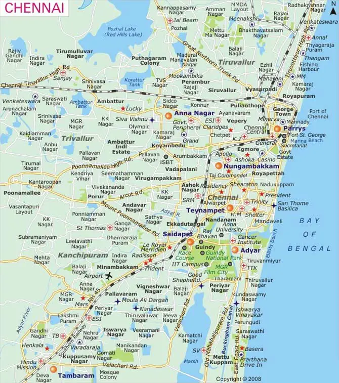

Experiment 1 - Web Page Creation using HTML
Click on different areas of the map to explore locations.
Chennai Map

Google Map (Chennai) I-Frame
TamilNadu Government
|
Rajalakshmi Engineering College
|
Back to Chennai Map